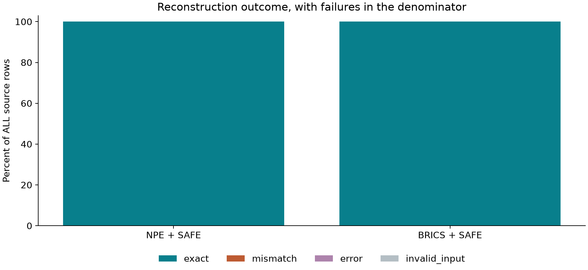

What the experiment shows
On 2,897,778 molecules reconstructed exactly by both models, NPE + SAFE uses 19.662 tokens per molecule versus 19.942 for BRICS + SAFE: 1.40% fewer tokens. This comparison includes the connection syntax inside SAFE strings.
This result measures the complete partition-to-SAFE-to-BPE pipeline. It does not isolate the effect of partitioning alone, because the two sequence vocabularies are learned separately.
The average advantage is not uniform: the NPE + SAFE p95 length is 40 tokens versus 37 for BRICS + SAFE, and p99 is 96 versus 85. NPE has a longer high-length tail in this experiment.
NPE + SAFE: 2,897,778 exact reconstructions, 19 changed molecules, 0 encoding/decoding errors, and 22 invalid inputs. Median / p95 / p99 token lengths on exact reconstructions: 15 / 40 / 96.
BRICS + SAFE: 2,897,778 exact reconstructions, 19 changed molecules, 0 encoding/decoding errors, and 22 invalid inputs. Median / p95 / p99 token lengths on exact reconstructions: 17 / 37 / 85.
Shorter sequences can reduce the number of positions processed by a downstream model. No downstream training-speed, generation-quality, or property-prediction improvement has been measured here.
A separate pass over the per-molecule audit CSV verified all 2,897,819 source rows and the aggregate counts. On the common exact subset, NPE is shorter for 54.04% of molecules, BRICS is shorter for 36.86%, and 9.10% tie.
Measured results
| Pipeline | Exact / all rows | Sequence vocabulary | Additional NPE motifs | Paired mean units | Paired mean JSON bytes | Model bytes |
|---|---|---|---|---|---|---|
| NPE + SAFE | 2,897,778 / 2,897,819 | 3,000 | 3000 | 19.662 | 96.2 | 445,788 |
| BRICS + SAFE | 2,897,778 / 2,897,819 | 3,000 | — | 19.942 | 96.9 | 95,245 |
NPE has an additional learned motif dictionary. A matched sequence vocabulary is not matched total model capacity. Means are computed over the common exact-reconstruction subset; coverage is reported over all source records.
Distributions, fidelity and representation cost



Chemical-information audit
Subsets overlap. Charge means any formally charged atom; stereo means specified atom or bond stereochemistry. SAFE does not reconstruct atoms through the DemoDiff graph decoder.
NPE + SAFE
| Overlapping subset | Exact | Valid inputs | Changed | Error |
|---|---|---|---|---|
| stereo | 1,093,569 | 1,093,588 | 19 | 0 |
| charge | 174,277 | 174,279 | 2 | 0 |
| disconnected | 120,709 | 120,710 | 1 | 0 |
| isotope | 3,255 | 3,255 | 0 | 0 |
BRICS + SAFE
| Overlapping subset | Exact | Valid inputs | Changed | Error |
|---|---|---|---|---|
| stereo | 1,093,569 | 1,093,588 | 19 | 0 |
| charge | 174,277 | 174,279 | 2 | 0 |
| disconnected | 120,709 | 120,710 | 1 | 0 |
| isotope | 3,255 | 3,255 | 0 | 0 |
Diagnostic re-encoding of every mismatch recovered matching canonical structures after stereochemistry was removed while retaining isotope and charge information. These are stereo-related mismatches under the stated identity test. Both methods fail on the same source records; this does not establish that NPE fragmentation caused the discrepancy. The evaluated models have not been modified.
For all diagnostic cases, BPE preserved the SAFE string exactly. Bypassing BPE and directly round-tripping the canonical input through the configured SAFE converter still reproduced the molecular mismatch. This localizes the observed issue to the SAFE conversion path in this implementation; it is not evidence of a universal limitation of SAFE or a new NPE-specific failure.
NPE + SAFE: first failure examples
- Source row 266,962: canonical_isomeric_smiles_mismatch
- Source row 403,430: canonical_isomeric_smiles_mismatch
- Source row 440,233: canonical_isomeric_smiles_mismatch
- Source row 448,947: canonical_isomeric_smiles_mismatch
- Source row 515,404: canonical_isomeric_smiles_mismatch
- Source row 613,774: canonical_isomeric_smiles_mismatch
- Source row 686,303: canonical_isomeric_smiles_mismatch
- Source row 689,453: canonical_isomeric_smiles_mismatch
- Source row 767,250: canonical_isomeric_smiles_mismatch
- Source row 844,322: canonical_isomeric_smiles_mismatch
- Source row 923,221: canonical_isomeric_smiles_mismatch
- Source row 964,598: canonical_isomeric_smiles_mismatch
BRICS + SAFE: first failure examples
- Source row 266,962: canonical_isomeric_smiles_mismatch
- Source row 403,430: canonical_isomeric_smiles_mismatch
- Source row 440,233: canonical_isomeric_smiles_mismatch
- Source row 448,947: canonical_isomeric_smiles_mismatch
- Source row 515,404: canonical_isomeric_smiles_mismatch
- Source row 613,774: canonical_isomeric_smiles_mismatch
- Source row 686,303: canonical_isomeric_smiles_mismatch
- Source row 689,453: canonical_isomeric_smiles_mismatch
- Source row 767,250: canonical_isomeric_smiles_mismatch
- Source row 844,322: canonical_isomeric_smiles_mismatch
- Source row 923,221: canonical_isomeric_smiles_mismatch
- Source row 964,598: canonical_isomeric_smiles_mismatch
Vocabulary units and their differences
SAFE sequence units are BPE string pieces. They need not be independently valid molecules or complete chemical fragments. BRICS uses fixed chemistry rules for partitioning; NPE learns frequent adjacent subgraphs. Both are then serialized as SAFE and receive fragment-scoped sequence BPE. SAFE stores connections inside its string, so an empty external edge table does not mean connections cost nothing.
The dictionaries share 1,665 exact string units; union size 4,335, Jaccard overlap 0.384. This includes special tokens and compares text, not token IDs or chemical equivalence.
Frequent units exclusive to NPE + SAFE
| String unit | Occurrences |
|---|---|
O=6 | 98,296 |
O=7 | 90,001 |
O=5 | 84,288 |
(=O)N | 81,307 |
O=8 | 73,209 |
O=4 | 57,061 |
)CC1 | 54,910 |
O=9 | 52,149 |
CCNC(=N)N | 48,495 |
C(C)=O | 44,721 |
Cl5 | 43,000 |
NC= | 42,578 |
Frequent units exclusive to BRICS + SAFE
| String unit | Occurrences |
|---|---|
N46 | 117,425 |
O34 | 103,159 |
N35 | 100,654 |
N47 | 85,671 |
N57 | 80,824 |
N36 | 68,177 |
)C | 68,056 |
C46=O | 60,739 |
C57 | 59,883 |
C46 | 59,524 |
C47=O | 56,460 |
N58 | 55,891 |
Most-used units overall
NPE + SAFE
| Unit | Occurrences on exact reconstructions |
|---|---|
. | 14,071,986 |
C4 | 355,519 |
O | 352,230 |
C5 | 346,323 |
C6 | 317,561 |
C3 | 291,982 |
C | 282,302 |
C7 | 279,577 |
CC | 262,177 |
C1 | 248,202 |
N | 245,297 |
C8 | 224,368 |
BRICS + SAFE
| Unit | Occurrences on exact reconstructions |
|---|---|
. | 15,445,696 |
C | 302,919 |
O | 251,650 |
8 | 212,021 |
6 | 209,979 |
7 | 205,882 |
9 | 204,635 |
5 | 194,450 |
C1 | 191,092 |
c1 | 186,383 |
N | 180,676 |
CC | 173,786 |
Reproducibility and scope
All aggregate measurements, model fingerprints, training manifests and metric definitions (JSON) · Resource assessment and corpus census
Source SHA-256: 87d10f64ed147c6371ff6d385f46762ef77df6368cc68768de58df134a05cbfb. Original ChEMBL 37 records are retained, including duplicates. Dataset: CC BY-SA 3.0, ChEMBL/EMBL-EBI.
Figure design references DemoDiff, Section 3.1 / Appendix B.2; plots show our measurements, not copied paper results.
No vocabulary-budget sweep or downstream neural-model experiment is claimed. Audit timestamp: 2026-10-09T16:27:46.660372+00:00.